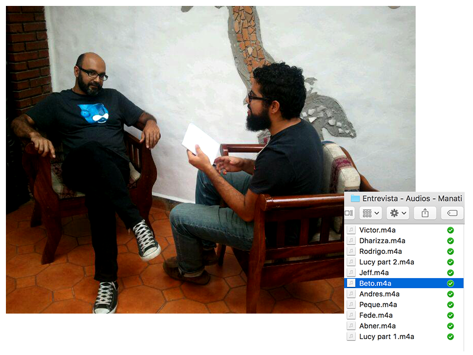
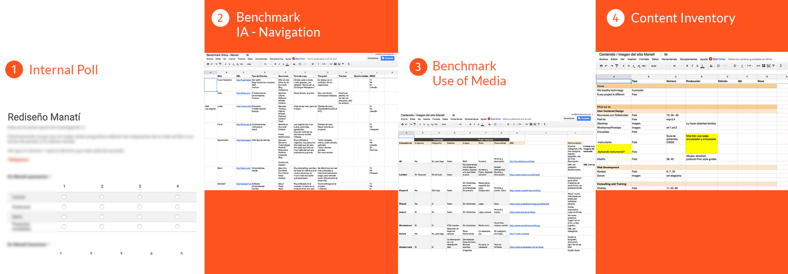
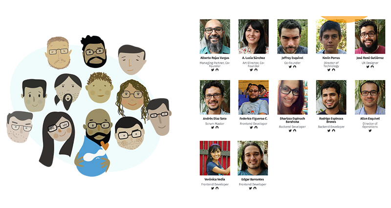

Manatí - Web Agency
From a Drupal centered Agency to a Web Agency, Manatí needed to communicate how it has evolved and what's important to us as a team when we're challenged by a project.
The redesign objectives were:
- The site didn't reflect the new Manatí's services
- It didn't reflect our values
- There was outdated information
- We had to have a redesign up before the DrupalCon
What I did
I first needed to understand What is manatí, Where is it going and Why Manatí exists. To do so, I had interviews/chats with the founders of Manatí. From these conversations I was able to get a broad idea of the values and concepts they talked about.
One of the concepts that was really important in all of these conversations, was the team and the importance of the team in the Agency. With this in mind, I held interviews with the whole team, to understand their point of view on things like: how is it to work in Manatí?, what kind of projects you love/hate doing and why? What would you like to do for future projects inside Manatí? etc.

These interviews gave me enough information to understand our team and their values, but I needed to somehow prioritize which of these values where more important than others, so, I created a internal poll.
Now knowing Manatí's future, value, team and underlying principles it's time to understand our customers needs. To create a convincing Persona to the partners and team to discuss, I focused the Persona on the comments we've received from some of our Partners (Four Kitchens, NuCivic, etc.), I didn't focused the Persona on age, gender, region, but I rather focused on what they were trying to know about Manatí and what they needed to make a decision to contact us.
This Persona, made it really easy to prioritize how we were going to do anything on the website, it helped me validate if my sketches and wireframes were trying to achieve their (Persona) needs.
I benchmarked how other Agencies structured their website, what type of clients they've had, how that copy was written, what were the good parts, the bad, if they had social media accounts. This gave me an idea of what should be expected of our website in terms of what content do we need to have, what are some great ways to do so, or what ways we should avoid.
I ran another benchmark to understand how other Agencies treat their content on their site vs their blog, if they had categories, how was their copy, if they had a personality, what kind of imagery they had (real photos, abstract photos, illustrations, etc.), what opportunities we had to improve given our context and content.
With all these information now I was able to write copy for the website, and create a content inventory that our Art Director (Ana Lucía) could then create.

Key tools and deliverables
- Interviews
- Stakeholder Interviews
- Persona
- Strategy
- Benchmark
- Prototype
Results
We've received feedback from Partners and other agencies telling us that this new website really shows what is Manatí and what we are capable of. They are glad to finally meet our team, since before we always had illustrations of us.

The team is super happy, they love how we've embraced each member of the Manateam on the site and to demonstrate our culture to the world, from singing karaoke to our obsession with Mario Kart & coffee.
See: Manatí live website.